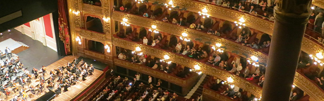

재단소개
영재는 기르고, 문화는 가꾸고
금호문화재단은 1977년 11월 29일 출범 이래, ‘영재는 기르고, 문화는 가꾸고’라는 재단 설립 취지에 맞추어 일찍이 문화예술, 그 중에서도 특히 클래식 음악과 미술분야의 영재 발굴과 육성을 위한 다양한 활동을 전개해 왔습니다.
금호문화재단
KUMHO
MECENAT
-
클래식
실내악 전용홀인 금호아트홀 운영, 세계 최정상 급 오케스트라 초청, 뛰어난 성과를 거둔 젊은 음악인을 독려하는 금호음악인상 제정, 명품 고악기 무상 임대, 연주자 항공권 지원 및 음악 영재 장학금 수여 등 클래식 음악 지원을 위한 다양한 활동을 지속적으로 펼치고 있습니다.
-
미술
한국 미술계의 중추 역할을 담당하는 금호미술관 운영, 신진 작가 발굴 및 소개, 더 나아가 젊은 작가들의 지속적인 성장을 지원하는 창작스튜디오를 운영하는 등 미술분야 발전을 위한 지원 역시 아끼지 않으며 한국 메세나의 대명사로 자리잡았습니다.
PRIZE
금호문화재단은 이러한 문화예술 발전에 대한 공로를 인정받아 다양한 수상으로 이어지며 한국의 대표 문화예술 지원자로서의 입지를 더욱 굳건히 하였습니다.
-
- 2002
금호문화재단 - 대통령표창
한국메세나대상 수상
- 2002
-
- 2004
故박성용 이사장 - 몽블랑 문화예술
후원자상 수상
- 2004
-
- 2014
박삼구 이사장 - 몽블랑 문화예술
후원자상 수상
- 2014